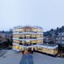

Looking further ahead, I’m sure that in all new school designs, senior management teams will be far more focused on Covid-related themes such as a greater emphasis on the movement of pupils around the school, environmental conditions and hygiene.
Results [0]
What are you looking for?
dRMM
 Close
Close
Close
Thinking 13 August, 2020 | 3 mins read
What has Covid-19 taught us about designing schools?
First published in the RIBA Journal in August 2020

Short term changes to how schools operate in response to Covid-19 are already being implemented, with a focus on hygiene, compartmentalisation of groups within the school as ‘bubbles’, staggered timetables to reduce congestion and maximising available space.
The big challenge longer term will be seeking a partial relaxation of the prescriptive nature of the Building Bulletins that define area and acoustic requirements. Only in this way will designers be able to develop new types of additional space that are less controlled and allow more flexibility.
Philip Marsh
Director
Director
If there isn’t going to be any additional scope to build extra space to improve social distancing in schools, we have to think differently. One approach is to extend learning outside the classrooms into the landscape by providing alternative space free from the constraints of current Building Bulletin standards. We recently made a proposal for a new primary school which includes outdoor classrooms that are a contemporary version of Jan Duiker’s 1927 Open Air School; this was built in Amsterdam to help physically weak children gain strength with the help of sun and fresh air. These classrooms could be orientated to the south for solar gain, and make some concession to comfort with a simple glazed façade and canopy. As well as having the benefit of getting the children out into the landscape, such low-cost spaces will free up more room within schools.


Jan Duiker’s 1927 Open Air School in Amsterdam
Another way forward is to lobby the Department for Education to accept a more flexible approach to school design to reduce capital cost per metre squared, and increase area as a result. Inherent flexibility should be designed into all new schools so that they can be stripped back and reconfigured to suit the latest educational thinking. Measures could include a single volume, flexible ‘creative hall’ that could serve for a range of uses from art classes, to design technology, food tech or performance space. This could be a low-tech, glulam portal frame building with a simple roof and walls.
We need to re-evaluate the environmental design of teaching spaces. I would like to see a greater emphasis on delivering exemplary design standards with better naturally-lit and well-ventilated spaces, rather than just achieving compliance.
Currently, we have extremes from each end of the spectrum, from the utilitarian, public hygiene-focused Victorian Board Schools which maximised light, ventilation and volume, to the hermetically-sealed, acoustically quiet, mechanically ventilated and artificially lit classrooms of the 2020s. These environmental controls, introduced in an endeavour to improve learning, add cost and complexity to every capital project, with maintenance costs that take money away from the core activity of education. Perhaps there’s an opportunity to create a post-Covid school typology somewhere between the two, with a range of spaces including both heavily serviced and acoustically controlled boxes and more simplistic, low-tech rooms.
Greater focus on the importance of Covid-19 precautions will immediately raise the bar for design, including the need for space to work even harder. I think it could be really exciting.
The main environmental focus should be on naturalness: light (excellent), temperature (cooler), air quality (large volume and good air changes), acoustic (internal and external) and connection to nature – basically just good design. But unfortunately many new classrooms are instead single aspect and deep plan, leading to more reliance on artificial lighting. In our new, engineered timber school for Wintringham Primary Academy in Cambridgeshire, the classrooms are designed to be triple aspect, which allows for the potential for cross-plan ventilation.
There may be an even greater focus on what materials we put into our schools. Taking reference from hospitals, we should select materials that are easy to clean and hygienic. Carpet is often the preferred material in schools as it is easy to maintain, forgiving, cost effective and improves acoustic absorption. But we should instead consider materials that are more environmentally sensitive and have natural bacteria-killing properties such as linoleum. Schools will also be re-evaluating their use of soft furnishings, such as the comfy chair for the story area.
There are plenty of other potential changes. A free flow of space and movement should be encouraged, by reducing contact with handles and push bars. Corridor doors that suffer the greatest wear and tear should all be held open, and doors on toilet clusters should be removed. The physical and authoritative segregation that exists between pupil and staff areas could also disappear. Maybe we’ll see a return to the Board School specification of wash basins lining the circulation spaces.
The opportunity to build new schools is exciting, as the demise of the overly ambitious BSF programme has led to very constrained school funding in recent years. Apart from demanding a better standard of teaching environment, we should be building to a high quality so that the 50 or so new schools benefit from longevity and minimise the annual maintenance cost for the local authority.